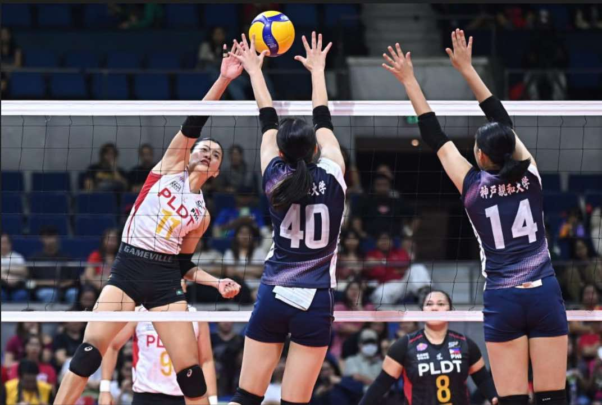

The Regis Publication
PLDT Secures Double Crown in Premier Volleyball League PH
The REGIS Publication,Charles Busa

The PLDT High Speed Hitters secured their second consecutive Premier Volleyball League (PVL) Invitational title by defeating Japan's Kobe Shinwa University in a thrilling four-set match: 21-25, 31-29, 25-22, 25-18. It was held on August 31, 2025, at the Smart Araneta Coliseum.
The match began with Kobe Shinwa University taking the first set, using swift attacks and solid defense. PLDT responded strongly in the second set, with Savi Davison delivering a crucial service ace to level the match. Davison continued to lead with powerful serves and important points, while Kim Kianna Dy made key blocks and attacks that shifted momentum in PLDT’s favor. The turning point came in the third set when PLDT went on a 14-9 run, breaking the tie through teamwork and smart plays. In the fourth set, PLDT sealed their victory with a quick attack from Mika Reyes and a block by Dy against Nagisa Komatsuda.
This win not only gives PLDT their second straight title but also highlights their growth and strong presence in the league. Their ability to bounce back after dropping the first set shows their determination and teamwork. As they move forward, PLDT continues to raise the bar for excellence in Philippine volleyball.
The Editorial Staff - Amber Boukema, Charles Busa, Rizabela Uy, and Robert Rivera
INFORM, INSPIRE, IMPACT